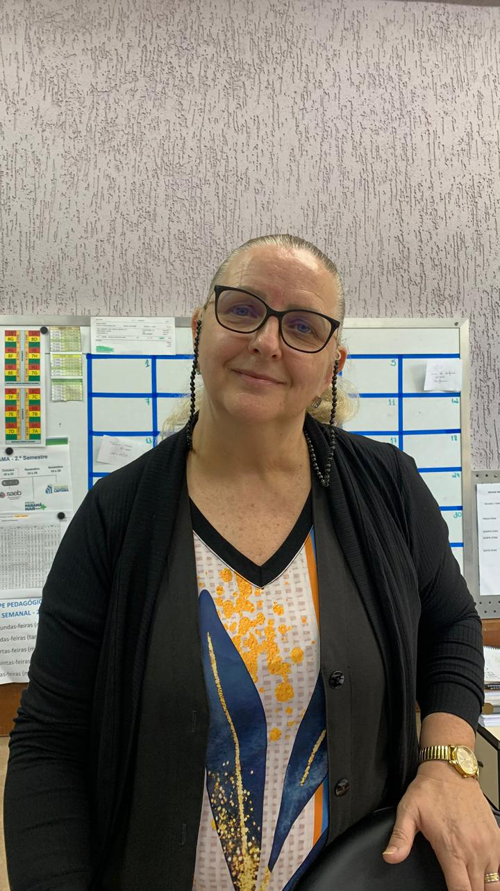
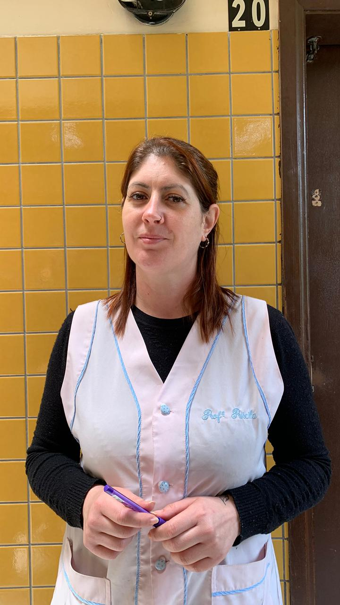
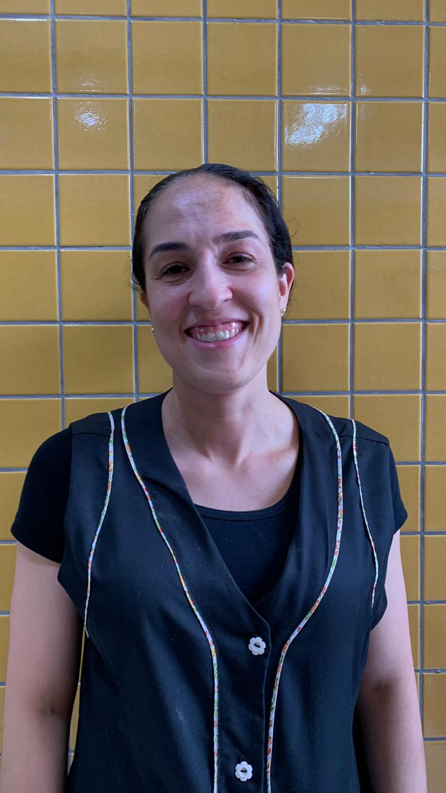
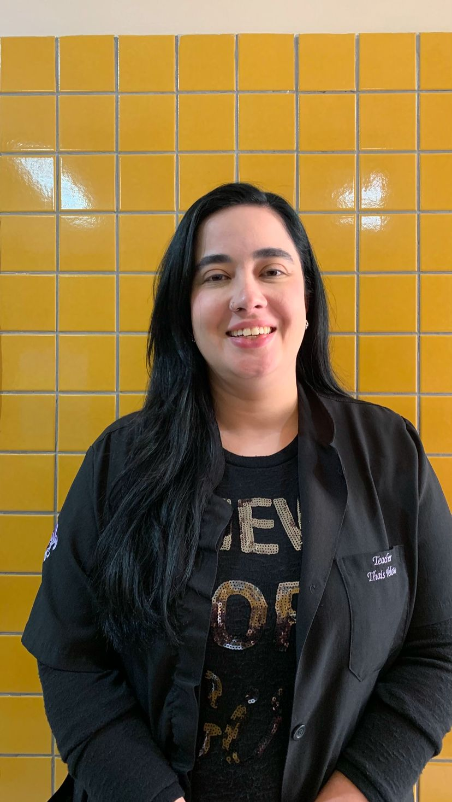
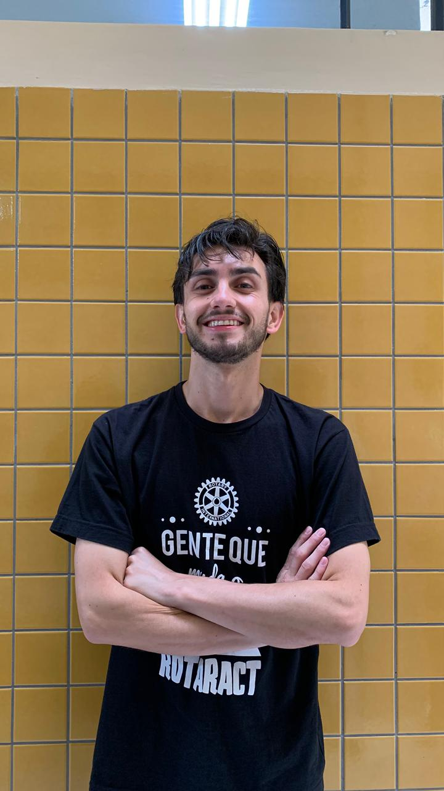
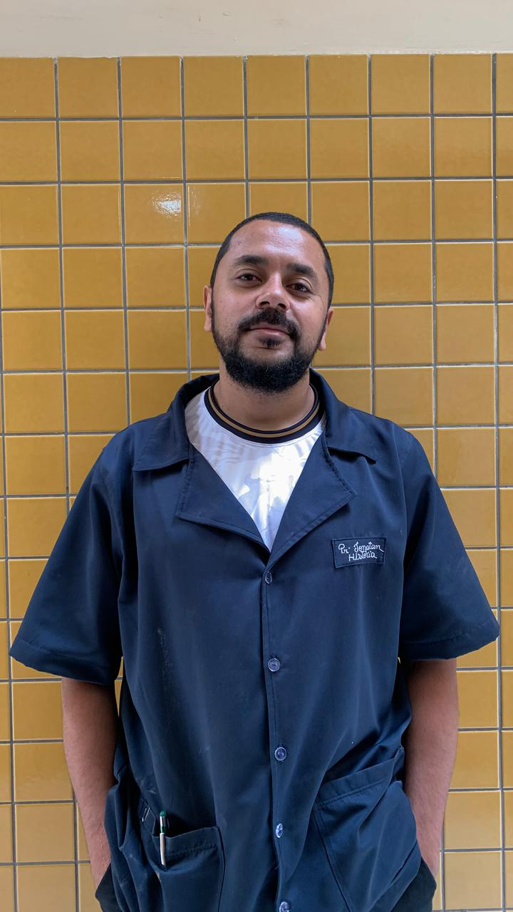
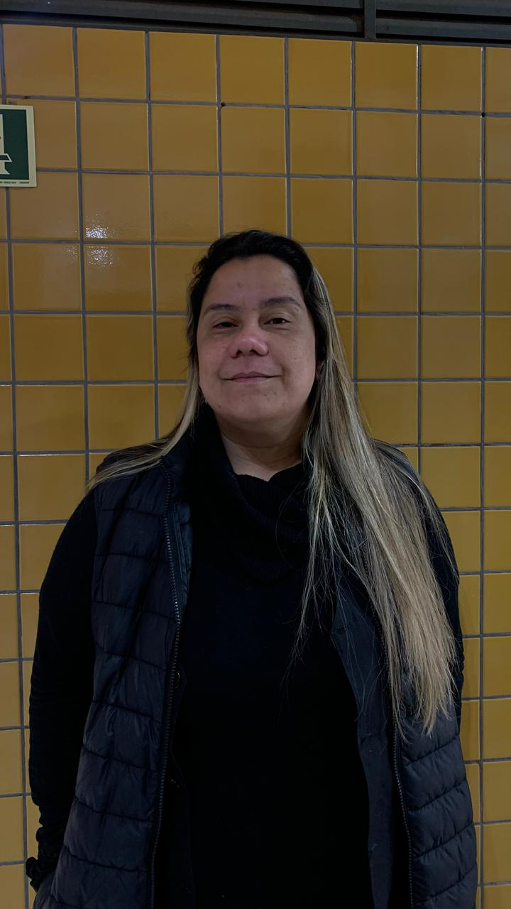
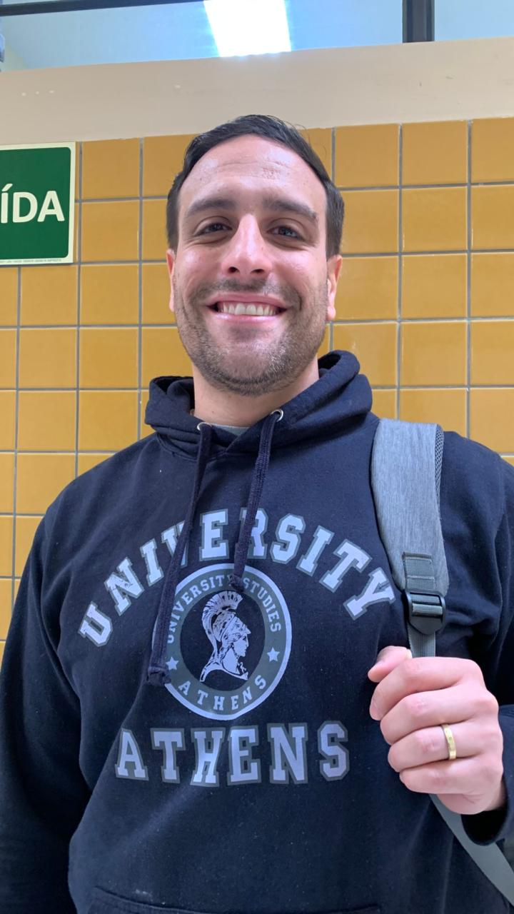
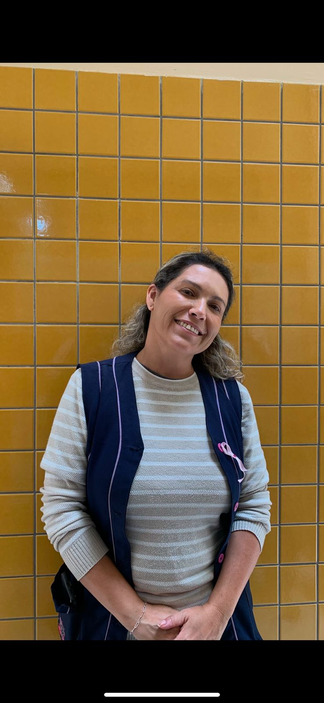
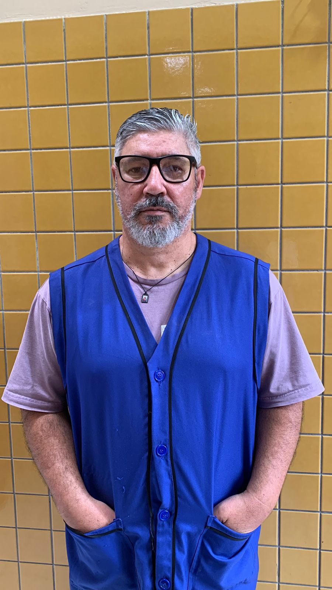

Joana - Pedagoga
"Olá, sou a pedagoga Joana, pedagoga do 1º ano A. O que eu acho da turma do primeiro 1ºA? É uma turma bastante agitada, nova, bem novinha, imatura, adoram conversar, são desafiadores também, mas penso eu como sempre aliado a questão da idade, essa imaturidade para o próximo ano ela vai modificá-los, eles vão se tornar um pouco mais sérios, um pouco mais responsáveis. Não vejo a turma como sendo péssima, horrível, não, eu vejo eles como estudantes tentando se colocar, pela idade, por tudo, precisam crescer, precisam amadurecer, muitos estarão de manhã outros estarão à noite. E é uma turma que tem de tudo para ser a melhor, tem muita gente boa, tem gente que gosta de atrapalhar, mas é uma turma bacana, legal, de modo geral é uma turma boa. Não tenho nada contra alguém, acho que tudo é uma questão de idade, de crescimento, apesar de eu gostar de pegar no pé faz parte do meu trabalho, vejo todos de uma forma positiva, tem um ou outro que dá vontade de puxar uma orelha mais de perto, mas assim de modo geral tem gente bem bacana, bem legal, que eu não conheço infelizmente. A todos um abraço, obrigada."

Priscila - Matemática
Evolução
"Evolução porque no primeiro trimestre a gente teve uma enxurrada de notas vermelhas, notas abaixo da média. No segundo trimestre já melhorou bastante e no terceiro agora tá melhorando mais ainda, pelo primeiro bloco a gente já consegue ver que várias pessoas já estão na média, já vão conseguir passar de ano e eu fico muito feliz com isso também"

Dayane - Química
Média
"Porque sempre tem o que melhorar, então assim, pensando em um contexto geral a nota ela se mantém numa média, no caso a média da escola é 60 pontos, porque sempre tem o que melhorar"

Thaís - Inglês
Decepção
"Decepção é a palavra das notas de inglês do 1A, já que a grande maioria não entregou o trabalho que eu solicitei e os que entregaram, o trabalho estava muito simples e minimalista, então acho que eu fiquei decepcionada com a turma porque eu sei que é uma turma que tem um potencial muito maior e que não entregou tudo como deveriam"

Aline - Ed. Física
Boas
"Porque na minha disciplina eles conseguem se desenvolver bem, de maneira geral. Então eles são bons"

Wendell - Artes
9,5
"Porque eles são perfeitos, uma das minhas turmas preferidas, só que as vezes, como toda turma, quer sair para ir no banheiro toda aula mas entendo porque é a última aula, sexta aula a nossa, mas eles são maravilhosos"

Jonatan - Proj. de Vida
Desafio - 7,5
"É uma turma bastante agitada, é uma turma que leva bastante tempo pra conseguir estabelecer um certo controle para poder mediar o conteúdo, então por isso já meio que tiraria um ponto, por isso o 7,5 de 10, os outros desafios também é bastante conversa durante a aula, a conversa paralela, o contato, o sorrisinho, as divisas entre os grupos, acabam meio que dificultando o seguimento da aula, tem que ficar cortando o tempo todo o conteúdo, isso acaba afetando a concentração, acaba prejudicando a motivação da aula"

Silmara - Português
Superação
"Porque o que eu venho percebendo é que alguns alunos iniciaram assim mais devagar no começo do ano, não estavam assim com tanto vigor para fazer as plataformas, as atividades. E agora que a gente já tá na reta final, eu percebo que eles ficaram mais comprometidos, superaram aquelas dificuldades"

Daiane - Geografia
Desanimador
"Porque acho que falta muito interesse dos alunos, sabe? Em melhorar, em levar o estudo a sério, em entregar as coisas no dia, em se interessar pelo estudo, eu acho que muitos só estão vindo só de corpo assim, sabe, esquecendo de estar dentro do colégio, eles ficam pensando no lá fora e não tem muita responsabilidade com o estudo e isso desanima o professor, porque ele quer dar uma boa aula, ele quer melhorar e ninguém se interessa e daí isso desanima"

Leonardo - Filosofia
Preguiça
"É uma turma que demonstra ser muito competente, as pessoas são inteligentes, são capazes, mas as vezes deixam de fazer as atividades, eles preferem conversar, preferem brincar e aí as vezes deixam as coisas para fazer e por isso a nota acaba ficando para muitas pessoas menor, mas é uma turma muito capaz e eu tenho confiança e gosto bastante deles"

Gustavo - Física
Melhora
"As notas melhoraram muito. A turma no começo do ano acreditava que o Ensino Médio seria uma coisa mais simples, o que não é. E a turma entendeu que precisa de muito mais esforço que vinha tendo antes, então eu acredito que seja isso que fez a turma melhorar, e muito as notas"

Fabiane - P. Computacional
Resistência
"Porque os alunos, eles tem uma resistência em aprender o pensamento computacional, novas formas de programas que vem dentro desse componente, então as notas deles são razoáveis porque eles atingem a meta mas o aprendizado é um ou outro que leva daí"

Tadeu - História
Regular
"Porque a maioria dos alunos, alguns são interessados, outros nem tanto interessados e isso dificulta o aprendizado da maioria dos alunos, por isso que é uma turma regular"
×